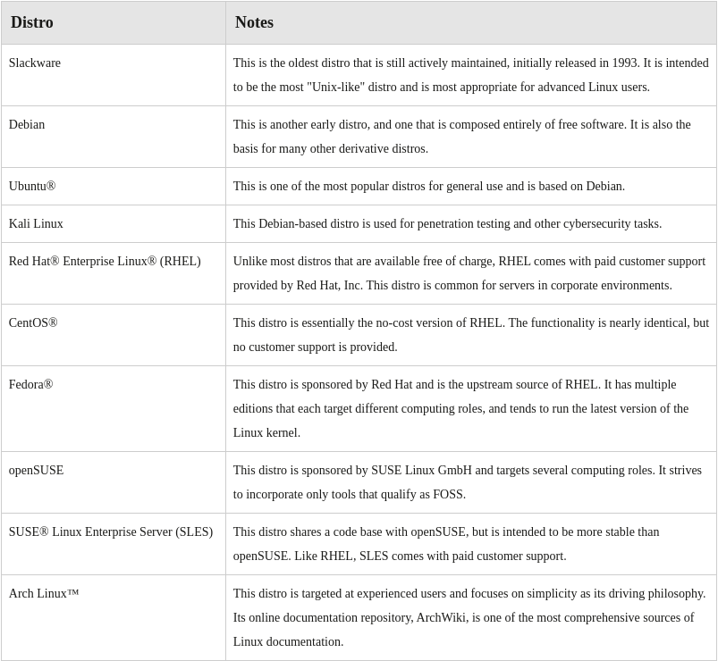

List of Linux Distributions
There are hundres of distros available. the following table includes some of the most historic and/or popular ones.
Note: Many Linux distros include proprietary software and are not entirely FOSS
Note: For more information about Linux distros, visit:
https://distrowatch.com